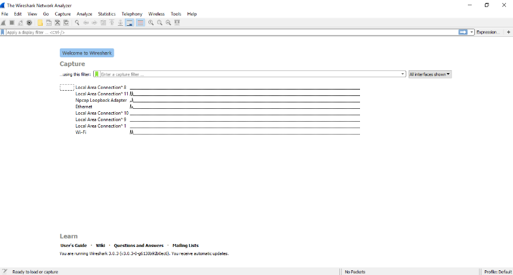
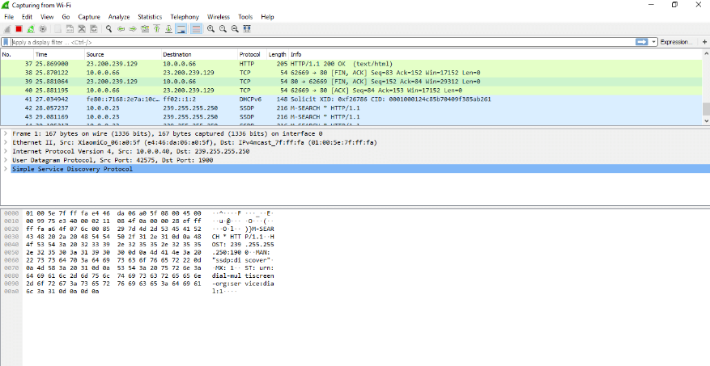
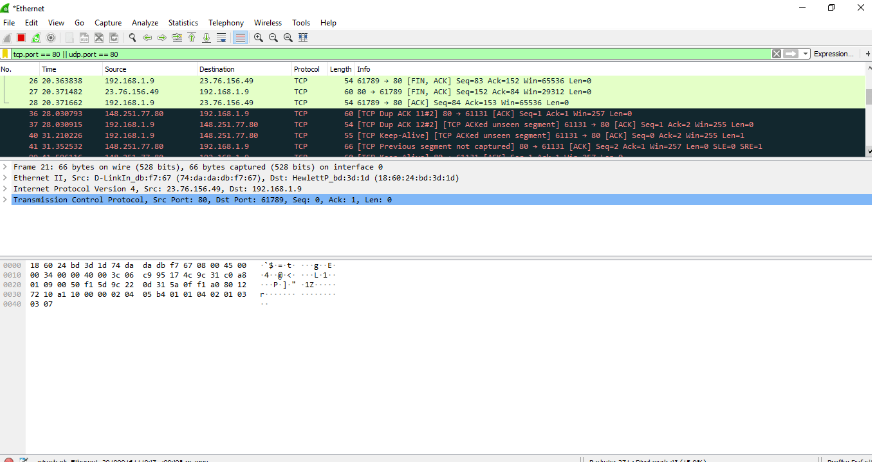
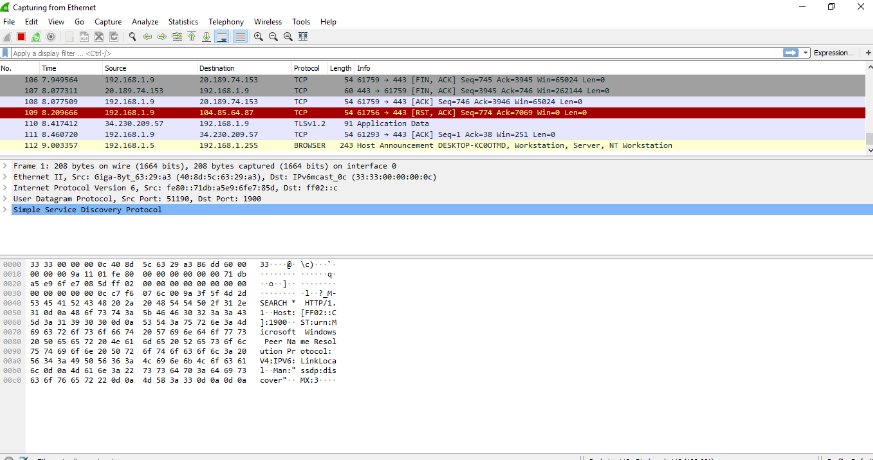
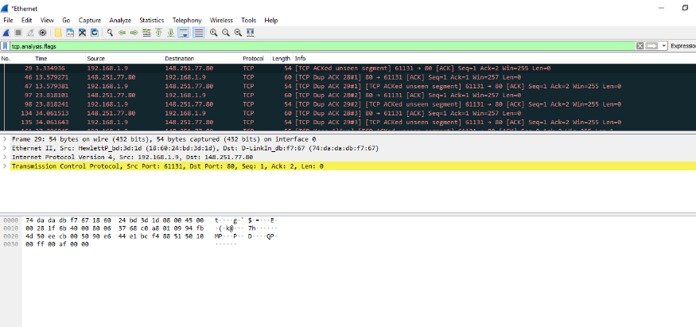
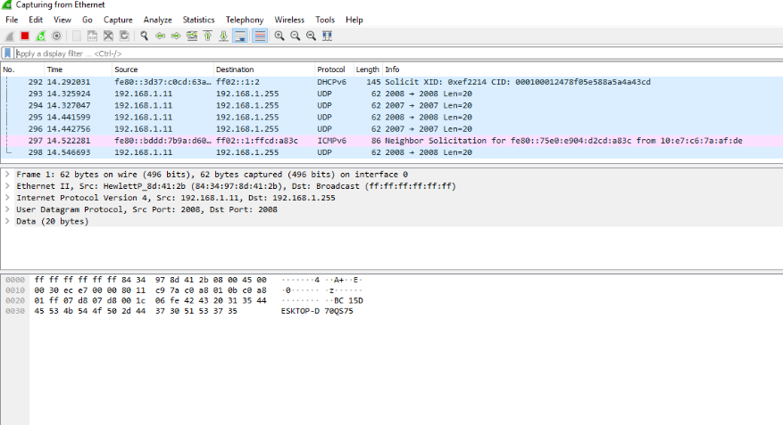
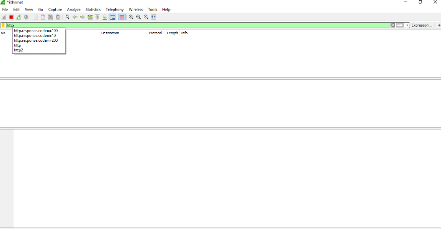

Wireshark is an open-source packet analyzer, which is used for education, analysis, software development, communication protocol development, and network troubleshooting.
It is used to track the packets so that each one is filtered to meet our specific needs. It is commonly called as a sniffer, network protocol analyzer, and network analyzer. It is also used by network security engineers to examine security problems.
Wireshark is a free to use application which is used to apprehend the data back and forth. It is often called as a free packet sniffer computer application. It puts the network card into an unselective mode, i.e., to accept all the packets which it receives.
Wireshark can be used in the following ways:
A packet is a unit of data which is transmitted over a network between the origin and the destination. Network packets are small, i.e., maximum 1.5 Kilobytes for Ethernet packets and 64 Kilobytes for IP packets. The data packets in the Wireshark can be viewed online and can be analyzed offline.
In the late 1990's Gerald Combs, a computer science graduate of the University of Missouri-Kansas City was working for the small ISP (Internet Service Provider). The protocol at that time did not complete the primary requirements. So, he started writing ethereal and released the first version around 1998. The Network integration services owned the Ethernet trademark.
Combos still held the copyright on most of the ethereal source code, and the rest of the source code was re-distributed under the GNU GPL. He did not own the Ethereal trademark, so he changed the name to Wireshark. He used the contents of the ethereal as the basis.
Wireshark has won several industry rewards over the years including eWeek, InfoWorld, PC Magazine and also as a top-rated packet sniffer. Combos continued the work and released the new version of the software. There are around 600 contributed authors for the Wireshark product website.
Wireshark is similar to tcpdump in networking. Tcpdump is a common packet analyzer which allows the user to display other packets and TCP/IP packets, being transmitted and received over a network attached to the computer. It has a graphic end and some sorting and filtering functions. Wireshark users can see all the traffic passing through the network.
Wireshark can also monitor the unicast traffic which is not sent to the network's MAC address interface. But, the switch does not pass all the traffic to the port. Hence, the promiscuous mode is not sufficient to see all the traffic. The various network taps or port mirroring is used to extend capture at any point.
Port mirroring is a method to monitor network traffic. When it is enabled, the switch sends the copies of all the network packets present at one port to another port.
The Wireshark software window is shown above, and all the processes on the network are carried within this screen only.
The options given on the list are the Interface list options. The number of interface options will be present. Selection of any option will determine all the traffic. For example, from the above fig. select the Wi-Fi option. After this, a new window opens up, which will show all the current traffic on the network. Below is the image which tells us about the live capture of packets and our Wireshark will look like:
The above arrow shows the packet content written in hexadecimal or the ASCII format. And the information above the packet content, are the details of the packet header.It will continue listening to all the data packets, and you will get much data. If you want to see a particular data, then you can click on the red button. The traffic will be stationary, and you can note the parameters like time, source.
You can also select the connection to which your computer is connected. For example, in this PC, we have chosen the current network, i.e., the ETHERNET. After connecting, you can watch the traffic below:
There is a filter block below the menu bar, from where a large amount of data can be filtered. For example, if we apply a filter for HTTP, only the interfaces with the HTTP will be listed.

Whenever we type any commands in the filter command box, it turns green if your command is correct. It turns red if it is incorrect or the Wireshark does not recognize your command.
Wireshark is a packet sniffing program that administrators can use to isolate and troubleshoot problems on the network. It can also be used to capture sensitive data like usernames and passwords. It can also be used in wrong way (hacking) to ease drop.
Packet sniffing is defined as the process to capture the packets of data flowing across a computer network. The Packet sniffer is a device or software used for the process of sniffing.
Apply the filter by the name 'http.' After the filter is applied, the screen will look as:
It is the process used to know the passwords and username for the particular website. Let's take an example of gmail.com. Below are the steps:
In the arrow shown above, the 'show and save data as' has many choices. These options are- ASCII, C Arrays, EBCDIC (Extended Binary Coded Decimal Interchange Code), etc. EBCDIC is used in mainframe and mid-range IBM computer operating systems.